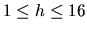
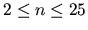
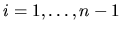
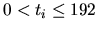
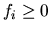
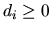

| Gone Fishing |
John is going on a fishing trip. He has h hours available ( ), and there are n lakes in the area ( ) all reachable along a single, one-way road. John starts at lake 1, but he can finish at any lake he wants. He can only travel from one lake to the next one, but he does not have to stop at any lake unless he wishes to. For each , the number of 5-minute intervals it takes to travel from lake i to lake i + 1 is denoted ti ( ). For example, t3 = 4 means that it takes 20 minutes to travel from lake 3 to lake 4.
To help plan his fishing trip, John has gathered some information about the lakes. For each lake i, the
number of fish expected to be caught in the initial 5 minutes, denoted fi
(
), is known. Each 5
minutes of fishing decreases the number of fish expected to be caught in the next 5-minute interval by a constant rate of di (
). If the number of fish expected to be caught in an interval is less than
or equal to di, there will be no more fish left in the lake in the next interval. To simplify the planning,
John assumes that no one else will be fishing at the lakes to affect the number of fish he expects to catch.
Write a program to help John plan his fishing trip to maximize the number of fish expected to be
caught. The number of minutes spent at each lake must be a multiple of 5.
2 1 10 1 2 5 2 4 4 10 15 20 17 0 3 4 3 1 2 3 4 4 10 15 50 30 0 3 4 3 1 2 3 0
45, 5 Number of fish expected: 31 240, 0, 0, 0 Number of fish expected: 480 115, 10, 50, 35 Number of fish expected: 724